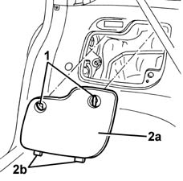
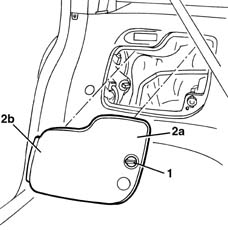

7040B17 LUGGAGE COMPARTMENT/LOAD PLATFORM SIDE TRIM FLAP (ONE), LH OR RH REPLACE
- Path
- Procedures > 70 FITTINGS > 7040 BODYSHELL INTERIOR TRIMS AND FITTINGS > 7040B LUGGAGE COMPARTMENT AND LOAD PLATFORM TRIMS > 7040B17 LUGGAGE COMPARTMENT/LOAD PLATFORM SIDE TRIM FLAP (ONE), LH OR RH REPLACE
- Kind
- repair procedure (removal / refitting; the operation number is the code)
- Applies to
- all engines; all production periods
- Interactive page
- https://sloeber94.github.io/elrnDB-fMltpl/en/#/2892182
Applies to: all engines; production: fino a 05/99, da 06/99 a 03/02
 Removing
Removing
 Refitting
Refitting1. Open the tailgate and rotate the retainers until they disengage.
2. Remove the flap (2a) releasing it from the lower retainers.

Applies to: all engines; production: fino a 05/99, da 06/99 a 03/02
Refitting
RemovingCheck that the flap and the retainers are not damaged.
Fit the flap attaching the lower retainers first and then rotate the upper retainers into place.
Applies to: all engines; production: da 09/03, da 04/02 a 08/03, da 06/04, fino a 05/04
Removing
Refitting1. Open the tailgate and rotate the front retainer until it is released.
2. Remove the flap (2a) releasing it from the rear retainer (2b).

Applies to: all engines; production: da 09/03, da 04/02 a 08/03, da 06/04, fino a 05/04
Refitting
RemovingCheck that the flap and retainers are not damaged.
Fit the flap attaching the rear retainer first, then rotate the front retainer into place.